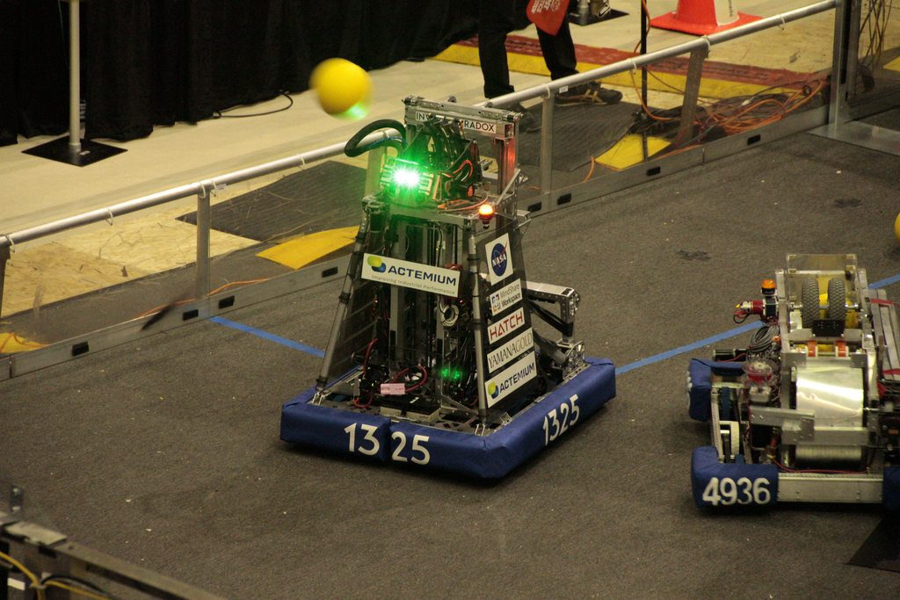

CASPER
This ball shooting, hanger balancing robot is the culmination of thousands of combined hours in engineering. Competing in the 2020 FIRST Robotics competition, this robot had exceptional performance, winning events and numerous awards even though the season was cut short. See the intricate work that went into each subsystem below in our engineering handbook and our "Behind the Bumpers" interview.

Awards
- District Event Winners
- District Excellence in Engineering Award
- District Engineering Design Award
Features
To reach peak performance the robot had to have some cool stuff, that included:
- Custom 0.09" Sheetmetal structure, 6 wheel tank-drive, custom single-speed gearboxes, capable of up to 22ft/s travel.
- Two stage cascading elevator, custom 7:1 gearbox with 660lbs of stall load, 0.25s for full extension.
- Automated velocity compensating turret with live tracking and 200 degrees of range, 4" dual flywheels with an active hood.
Watch our breakdown!
Watch the video breakdown of the robot!
Engineering Notebook
- An in depth guide on the design process, tasks at hand, and robot development
- The intricacies of each subsystem, both hardware and software wise.
Winners of the Georgian District Event.